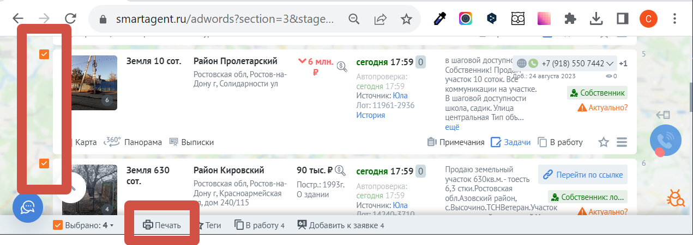

После выбора требуемых объявлений в смарт агенте и нажатия кнопки "печать"
нужно обязательно выбрать альбомную раскладку. Благодаря этому столбцы будут шире и текст будет лучше распознаваться. Также надо убрать поля, чтобы на лист вместилось больше позиций.
Получившийся файл загружаем на этот сайт https://tools.pdf24.org/ru/ocr-pdf для распознавания. Выбираем русский язык. Сохраняем распознанный файл.
Теперь этот распознанный файл загружаем на сайт https://www.onlineocr.net/pdftoexcel для переноса в формат excel. Выбираем русский язык. Скачиваем получившийся файл в формате Excel.
Далее редактируем этот файл в Excel - переносим из этого файла в отдельный новый файл Excel только имена и телефоны, распределяя их на два столбца, как в видео.
(Сочетание клавиш Ctrl и C копирует выбранную ячейку. Ctrl и V вставляет скопированные данные в выбранную ячейку).
Сохраняем в формате CVS. Получившийся файл загружаем в Lidogenerator. Он там корректно читается.